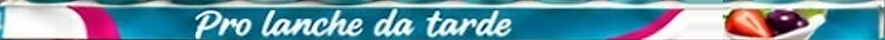

01
A categoria já é a mídia.
A ambientação dá ordem à abundância. Não compete com ela.


Proposta 75LAB · Planejamento e ambientação
Seis espaços, uma arquitetura de escolha. Do que a loja e o shopper precisam às peças de cada espaço.
Fale comVanessa MorelliDiretora Comercial · 75LAB
O que aprendemos
A ambientação dá ordem à abundância. Não compete com ela.
Cada espaço precisa responder ao momento dele.

Qualidade primeiro, navegação por família depois.

Quando investe em hierarquia, blocagem e acabamento.
 Econômica
Econômica
A estratégia · território recomendado
Cada marca responde a um momento real da rotina. A loja fica unida pela lógica de escolha, e cada marca mantém os próprios códigos.

Resolve a navegação: whey em pó, pronto para beber e para levar.
O ponto mais seguro de executar: promotora fixa e reposição diária.
A maior ambição estética: o valor do queijo e famílias claras.
Constrói desejo e ordena os sabores sem poluir.
De
Exposições fragmentadas, dependentes de embalagem e preço.
Para
Pontos de categoria legíveis, desejáveis e fáceis de abastecer.
Através de
Blocagem, códigos de marca, mensagem de ocasião e acabamento proporcional ao ponto.
Como funciona


Uma testeira baixa, no contorno do móvel ou no suporte que já existe, com marca e ocasião.
6testeiras, uma por espaço




Réguas no trilho de preço que navegam por formato, família ou ocasião. A etiqueta do D'avó fica sempre por cima.
27réguas de gôndola


Bandejas, cartões e nomes trocáveis no lugar de papelão e sacos. A loja limpa, repõe e mantém.
27bandejas e bolsos 43cartões e nomes
A seguirUm espaço por tela: arraste a foto para comparar o antes e o depois, veja as peças e como aplicar.
01Parmalat FitRotina ativa
“Qual é o seu momento Fit?”
 AntesDepois
AntesDepois
As peças
1 testeira e 15 adesivos, por cima do que já existe.
Investimento totalR$ 1.270,93** Valores estimados
Como aplica
02Parmalat FitRotina ativa
“Mais que proteína para a sua rotina”

 AntesDepois
AntesDepois
As peças
Réguas no trilho e peças que ficam em pé sozinhas.
Investimento totalR$ 2.785,43** Valores estimados
Como aplica
03Parmalat FitRotina ativa
“Whey 21 g de proteína”

 AntesDepois
AntesDepois
As peças
Uma testeira, uma moldura e sete réguas no trilho.
Investimento totalR$ 1.442,08** Valores estimados
Como aplica
04Batavo Pense ZeroLeveza
“Seu dia com mais sabor”
O depois é a arte de referência.
 AntesDepois
AntesDepois
As peças
Testeira, adesivos no vidro e seis réguas por ocasião.
Investimento totalR$ 2.965,00** Valores estimados, com os adesivos externos opcionais
Como aplica
05PrésidentRefeição
“O queijo certo para cada momento”
 AntesDepois
AntesDepois
As peças
Bandejas que montam sem cola e cartões que trocam por cima.
Investimento totalR$ 2.258,30** Valores estimados
Como aplica
06Sobremesas BatavoPrazer
“Hora da sobremesa”
 AntesDepois
AntesDepois
As peças
Uma régua só e nomes soltos que o promotor troca.
Investimento totalR$ 540,83** Valores estimados
Como aplica
Resumo do investimento
Total dos seis espaçosR$ 11.262,57*
* Valores estimados. O total do Pense Zero inclui os adesivos externos opcionais.
Diretora Comercial · 75LAB
Para tirar dúvidas, fechar o escopo e agendar a medição na loja.
75LAB Estratégia, Design e Produção Ltda. · CNPJ 55.470.982/0001-77